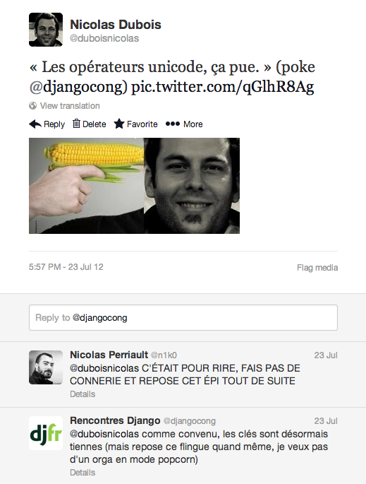

Mon langage préféré est python
(yeah, no kidding?!)
public class HelloWorld {
public static void main(String [] args) {
System.out.println("Hello World!");
}
}print("Hello World!")<?php
class Foo {
function bar($params) {
foreach($params as $param) {
print $param;
}
}
}class Foo
function bar params
foreach params as param
print paramDifférence : 127 caractères vs 89 caractères
class Foo:
def bar(params):
for param in params:
print paramclass Foo
def bar params
for param in params
print paramDifférence : 84 caractères vs 80 caractères

Utilisation des opérateurs Unicode
10 + 10 + 10 + 10 + 10 + 10 + 10
s'écrit plus simplement
7 × 10
| >= | ≥ |
| <= | ≤ |
| != | ≠ |
| Not | ¬ |
| x ** 2 | x² |
| x ** 3 | x³ |
| // | ÷ |
| sqrt(x) | √(x) |
| sum(sequence) | ∫(sequence) |
∆, Ω, ∑, π/∏
discriminant = (b ** 2) - (4 * a * c)∆ = b² - 4 * a * c∆ = b² - 4ac
for range(0, ∞):
print('foo')=====
==| Affectation | = |
| Égalité | == |
==| Affectation | ← |
| Égalité | = |
| = | : |
| == | = |
from datetime import datetime
start: datetime.now()
found is False
π: 3.14
list: [10, 22, 46]
while ¬found:
if a ≠ π:
if a ≥ 10:
b: √(50 ÷ 2)
∑: ∫(list)
if ∑ - a = 67:
found is True
∆t: datetime.now() - start
print("Time: {}ms".format(∆t))Zen de python : Readability counts.
On passe seulement 25 % de notre temps à écrire du code pour rendre les 75 % de notre temps à le rendre plus lisible.
Nicolas Dubois / @duboisnicolas